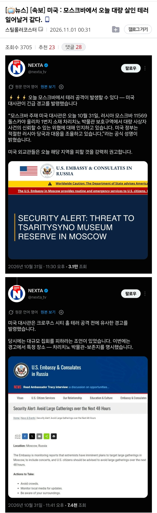
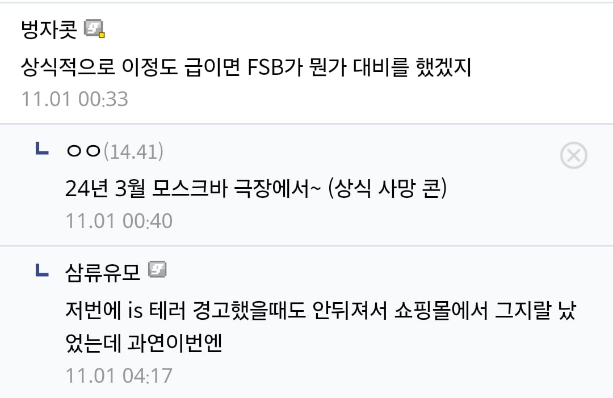

쓰나미보..
타협하지 않는다
ㄷㄷㄷ
월요일 주식시장 개줫댔다
아니 다른나라에서 테러날수있다는걸 미국이 어떻게 더 잘알음..?
정보전 기술력이 좋은갑지 뭐라도 전파 타면 랜덤하게 또는 미국이 주시하고 있는 대상이나 지역이면 미국한테 정보가 들어가지 않을까? 옛날처럼 전서구 날리는게 아니고서야
와이파이로 벽도 뚫어보는놈들이 공개 안한 기술력이 얼마나 좋을지 감도 안옴
CIA 해외 지부는 지금도 활발히 세계 곳곳에서 운영되고 있으니까.
우크라이나 특수요원 테러한다는거임? 공격주체가 어디지
우크라이나 주체는 아닐거 같은데. 아무리 그래도 서방세계가 다 손절칠 민간인 상대의 그런 멍청한 짓을 할리가
24년 테러때도 이악물고 우크라이나 엮을려고 했는데 하나도 연결고리 없었을껄 러시아가 강력한 힘으로 찍어누른게 무너지니깐 저런일 발생하는듯
우크라이나가 그 정도로 멍청하진 않겠지만 드론이나 기타 방식으로 본토 공격 감행해서 타국 대사나 외국인까지 다치면 제재 먹을 수도 있나?
우크라가 아닌가봄..
진짜 민간인 상대로 테러 저지르다가 걸리면
키이우에다가 핵을 날리건, 백린탄을 날리런, 생화학무기를 터트려도 뭐라 못함ㅋㅋ
적 요충지 공격하다가 민간인 피해도 입히는건 몰라도 민간인만 노려서 공격한다?
반전주의던 사람들도 강경전쟁파로 바뀌지ㅋㅋㅋ
그래서 Mosque Bar 가 되는거군
리멤버, 노러시안